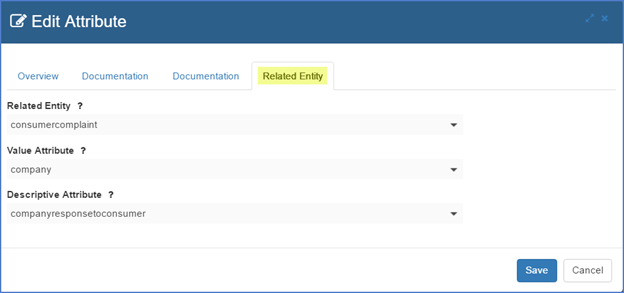

TOC for Appendix – Using Fixed Values including Approved List of Values during Classification Mapping
Introduction
While Mapping a Classification, you will mostly be concentrating on extracting data from Unstructured Data Sets. However, you may sometimes need to input Fixed Values. This may take the form of:
- Approved Lists of Values provided to you by an Administrator.
- Manually Entered text want in the Target Entity.
- Selecting from several common values such as File Name, Classification Name, etc. to aid in auditing, especially when the Target Entity has been extracted from the PD3P.
The idea behind an Approved List of Values (LOV) is this:
- Import a database that has specific data, i.e. the ‘approved values’, which you want to be part of a Classification project.
- Set up a Target Entity to receive data being extracted from an Unstructured Data Source as is normal for a Classification.
- Allow an Administrative User to link any Target Attribute back to the values imported from the Source Entity create in step 1.
- Allow any User to access a Mapping Type of Fixed Values and select the values provided by the Administrator in step 1.
The areas of the Pendo Digital Pendo Digital Data Discovery Platform affected by this functionality include:
• Data Source
• Entities/Attributes
• Classification Mappings
High-Level Workflow for using an Approved List of Values
Data Source
You will need to Create and Import a Data Source of Type=Source database that contains the approved values in one of its tables. Know which Entity/Attribute has the values you wish to use.
Data Entities
As is normal for a Classification project, a Type=Target Entity must be created to receive the data being extracted from the Unstructured Data Sets.
Attributes
The key difference is the use of the Related Entities tab while Editing an Attribute in a Target Entity.

- Edit the Target Entity and then Edit Attributes.
- When you are creating an Attribute that you wish to be populated from an approved list of values, enter in the normal information on the Overview tab and move to the Related Entity tab.
- The dropdown for Related Entity will show you all of the Source Entities in the Workplace. Select the desired Entity.
- The Value Attribute dropdown displays all the Attributes in the Related Entity. Select the Attribute that contains the values that will be placed in the Target Entity as part of Classification.
- The Descriptive Attribute dropdown displays all the Attributes in the Related Entity. Select the Attribute that contains the Displayed Values that will be seen while Mapping a Classification.
For example, your Data Source database could have a table called "Countries" that looks like this:
| ISO | Description |
|---|---|
| US | United State |
| CA | Canada |
| UK | United Kingdom |
You may wish to display the Description during Mapping, but actually store the ISO code in the Target Entity. If not, the Value and Display Attributes can be the same.
Classification Mapping
Make use of the Mapping Types of Fixed Value, which is available no matter which type of document you are mapping. There are three main ways in which you use a Fixed Value.
Accessing an Approved List of Values from a _Source Entity
- Add a Fixed Value Mapping.
- Select a Target Attribute has been set up as Related to an Entity as described above.
- Select List of Values / Manual Entry from the Type dropdown.
- The Value dropdown will then show all the values in the Display Attribute for the Related Entity as mentioned above. Select the desired Value or leave blank.
- If the target data is a date, e.g. Index Date and Time, you will be given the opportunity to enter in the desired date format to be stored as a string if you want. Please see Appendix - Date and Time Formatting and Parsing Options for various options.
Manually Entering a single Fixed Value
- Add a Fixed Value Mapping.
- Select a Target Attribute has NOT been set up as Related to an Entity as described above.
- Select List of Values / Manual Entry from the Type dropdown.
- You may then be type in any desired string.
Other Types of Fixed Values
The Pendo Digital Data Discovery Platform also provides for easy selection of some common Mapping needs.
- Full Path: Useful for showing the full location, including the name, of the source document.
- File Name: Useful if you just need the name of the source document.
- Index Date and Time: The date and time when the Attach Classification was run. Note: the Target Attribute must be Type=DateTime for this option to work properly.
- Classification Name and Classification Version Number: Especially useful when you have multiple Classifications populating a Target Entity. You will be able to ascertain which rows got mapped from which Classification. Note: the Target Attribute must be Type=Integer for this option to work properly.